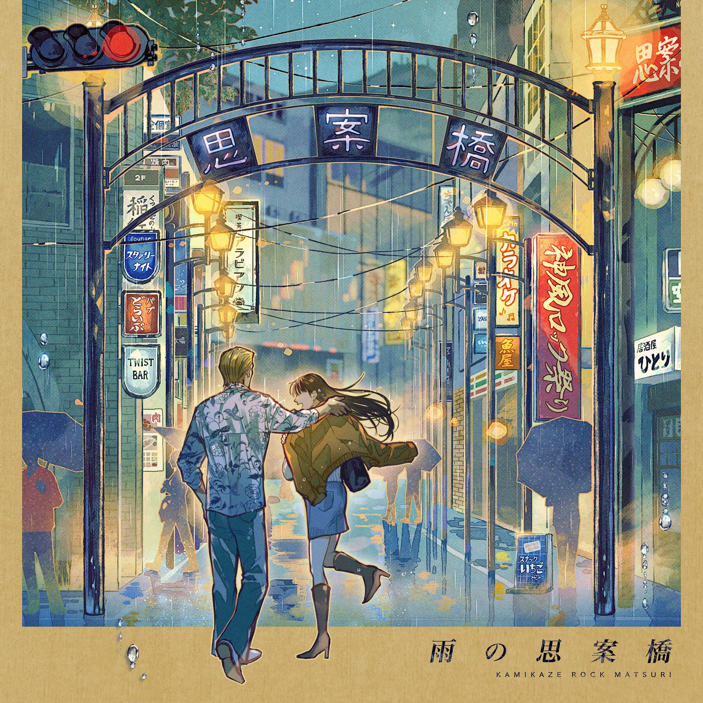
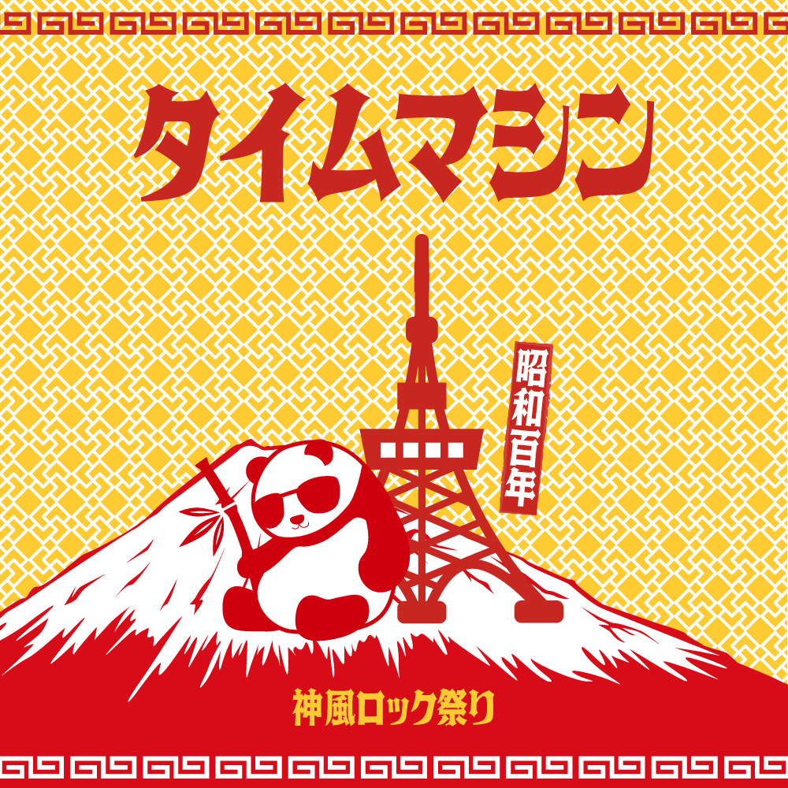

ディスコグラフィ
恋する150号
1st Album
1. コーヒーショップのハニーエンジェル
2. LA LA LA LA Love Song
3. カミナリジェット
4. 上海ロマンティックス
5. 涙のサマーバケーション
6. 思い出のヤングランド
7. Sea side city driving jet
8. Radio the surf
9. Kiss me baby
10. 恋するゼロハンライダー
11. 恋するヴァンパイア
12. コカコーラホリデー

雨の思案橋
2nd Album
1. いちご娘に恋をして
2. 恋のアラビアンドライブ
3. ひとりぼっちのサイレントナイト
4. Starry Night Drive
5. 雨の思案橋
6. カミカゼツイスト
Holiday maker
3rd Album
1. 新世紀のラヴァーズ
2. Moonlight rendezvous
3. Happy smile
4. 涙の香港タウン
5. 久能街道トワイライト
6. ホワイトサンドビーチ
7. テレフォンナンバー
8. Weekend Lovers Rock

タイムマシン
4th Album
1. 夏の魔法
2. コーヒーショップの女の娘
3. 上海恋娘
4. イエスタデイ
5. 幸せの青い鳥
6. 恋のバースデードライヴィン
7. 安倍奥テストコース
8. キケンドライブ
9. 日本平レイニーブルー
10. パーティーは終わらない
11. マテンナの夕陽
12. タイムマシン